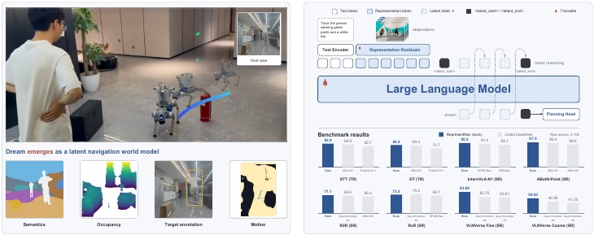
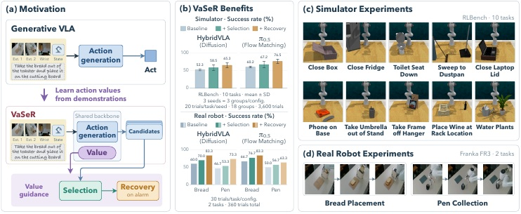
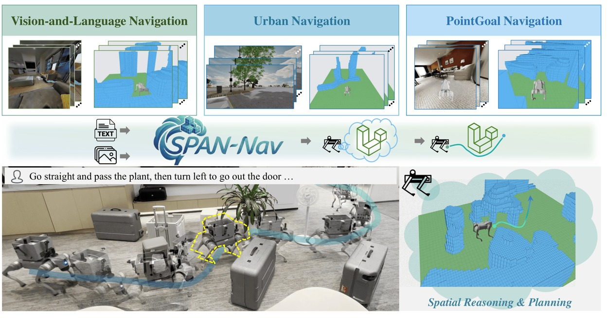
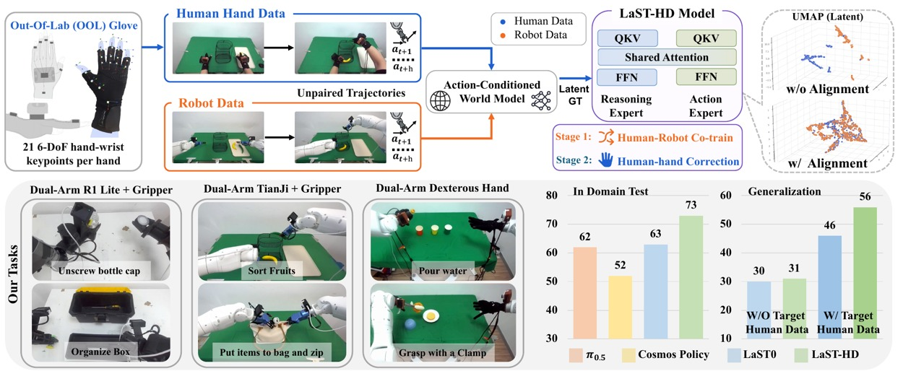
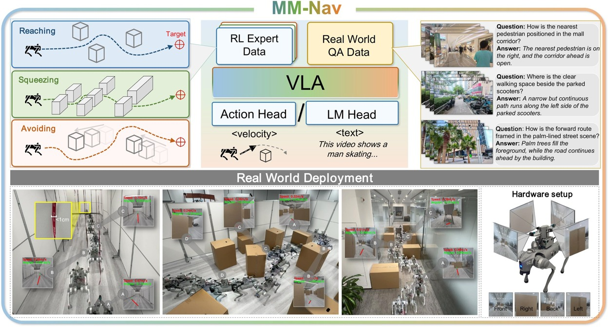

Embodied Navigation
Learning robust navigation from visual observations, language instructions, and complementary expert skills.
PEKING UNIVERSITY · GALBOT · EPIC LAB
Learning to see, reason, and act.
I am an undergraduate in Computer Science at Peking University, and I am currently at Galbot and EPIC Lab. I will continue my studies as a Ph.D. student at Peking University’s EPIC Lab under the supervision of Prof. He Wang, Prof. Li Yi, and Zhizheng Zhang.
My research focuses on embodied AI, particularly visual navigation and vision-language-action models. I am interested in how robots build useful representations of the world, anticipate what comes next, and turn that understanding into reliable actions.
Learning robust navigation from visual observations, language instructions, and complementary expert skills.
Building spatial and predictive representations that support perception, reasoning, and action.
Connecting vision-language-action models with physical reasoning, action evaluation, and recovery.
* Equal contribution

A Navigation Foundation Model on a Self-Constructed Representation Space
Learns a navigation-oriented visual representation from complementary vision foundation models, then predicts future states through latent reasoning in the same space.
Paper & code forthcoming
Value-Guided Vision-Language-Action Models
Equips a generative VLA with an action-conditioned value learned from demonstrations, enabling candidate selection and recovery through physical backtracking.
Paper & code forthcoming
Grounds navigation reasoning in compact 3D spatial priors learned from RGB video, supporting versatile navigation across diverse environments.

Aligns human and robot demonstrations in a shared latent physical reasoning space to learn manipulation from scalable human-hand data.

Unifies reaching, squeezing, and obstacle avoidance in a multi-view VLA through capability-balanced learning from multiple navigation experts.
For research discussions and collaboration, feel free to reach out.
2715768122@qq.com